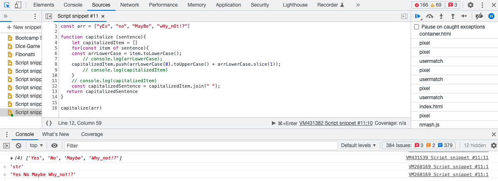

The problem..
As part of the Kata Challenges during Sprint 4 I found myself on a situation where I should write a function that get items inside an array and convert into a string where all the items had the first letter capitalized.

How the problem was solved..
First I started going through the techniques I could possibly apply, so I opened the Developers tool on Chrome and started writing down my code, consoleloging on each main step to check for the response of my code until I got to the result I was waiting for.

How I felt during this process..
I honestly during not only this but throughout many other challenges I felt excited for solving the problems but also frustrated while getting stuck and not understanding exactly the reason.
What I learned..
However, the process is totally empowering. It makes me feel I am able to learn anything as long as I don't give up. So, on this exercise I learned and/or practice, specially, how to use DevTools, console.log, arrays, arrays methods and for of loops